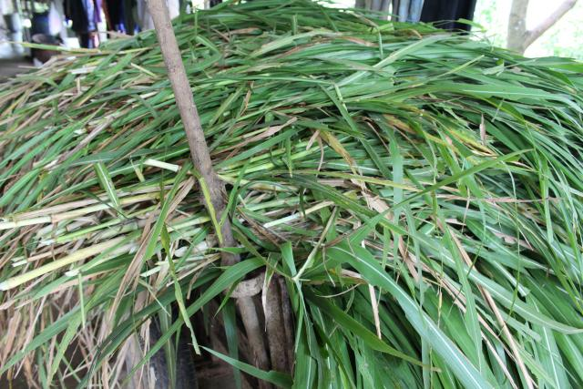

Elephant grass, merker grass, Napier grass, napier, Uganda grass, bana grass, barner grass [English]; herbe à éléphant, fausse canne à sucre, canne fourragère [French]; capim-elefante, capim-napiê [Portuguese]; pasto elefante, yerba elefante, zacate elefante, hierba elefante, gigante, pasto de Uganda [Spanish]; mfufu [Afrikaans]; erepani [Cook Island]; Olifantsgras [Dutch]; rumput gajah [Indonesian, Malaysian]; erba elefante, erba Napier, erba ugandese [Italian]; urubingo [Kinyarwanda]; mabingobingo [Kiswahili]; acfucsracsracsr [Kosraean]; senjele [Nyanja]; bokso [Palauan]; puk soh [Pohnpeian]; vao povi [Samoan]; buntot-pusa [Tagalog]; cỏ voi [Vietnamese]; الثيوم الأرجواني [Arabic]; 象草 [Chinese]; Слоно́вая трава́ [Russian]
Pennisetum purpureum Schumach. [Poaceae]
Pennisetum benthamii Steud., Cenchrus purpureus (Schumach.) Morrone
The taxon Cenchrus purpureus (Schumach.) Morrone was proposed in 2010 as a replacement for Pennisetum purpureum Schumach. (Chemisquy et al., 2010).
Elephant grass (Pennisetum purpureum Schumach.) is a major tropical grass. It is one of the highest yielding tropical grasses. It is a very versatile species that can be grown under a wide range of conditions and systems: dry or wet conditions, smallholder or larger scale agriculture. It is a valuable forage and very popular throughout the tropics, notably in cut-and-carry systems (Mannetje, 1992; FAO, 2015).
Elephant grass is a robust, rhizomatous, tufted perennial grass. It has a vigourous root system, developing from the nodes of its creeping stolons. The culms are coarse, perennial, and may be up to 4-7 m in height, branched above. Elephant grass forms dense thick clumps, up to 1 m across. The leaves are flat, linear, hairy at the base, up to 100-120 cm long and 1-5 cm wide, with a bluish-green colour. The leaf margin is finely toothed and the leaf blade has a prominent midrib. The inflorescence is a stiff terminal bristly spike, up to 15-20 cm in length, yellow-brown to purplish in colour. Spikelets are arranged around a hairy axis, and fall at maturity. Spikelets are 4-6 mm long and surrounded by 2 cm long plumose bristles. There is little or no seed formation. When seeds are present they are very small (3 million seeds/kg) (CABI, 2014; Francis, 2004; Mannetje, 1992; Duke, 1983). Elephant grass is very similar in appearance to sugarcane (Saccharum officinarum) but its leaves are narrower and its stems are taller (DAFF, 2014).
Elephant grass is a very important forage in the tropics due to its high productivity. It is particularly suited to feed cattle and buffaloes. Elephant grass is mainly used in cut-and-carry systems ("zero grazing") and fed in stalls, or made into silage or hay. Elephant grass can be grazed, provided it can be kept at the lush vegetative stage: livestock tend to feed only the younger leaves (FAO, 2015). Elephant grass, as implied by its name, is an important source of forage for elephants in Africa (Tchamba et al., 1993; Francis, 2004). Elephant grass is a multipurpose plant. The young leaves and shoots are edible by humans and can be cooked to make soups and stews (Burkill, 1985). The culms can be used to make fences, and the whole plant is used for thatch. It is considered a potential second generation energy source crop in the USA (EPA, 2013). Leaf and culm infusions are reported to have diuretic properties (Duke, 1983). Elephant grass has several environmental applications. It can be used to make mulch and to provide soil erosion control. It is a weed controller and, in Africa, it has been reported to be used as a trap plant in push-pull management strategies to fight against stemborers in maize crops (see Environmental impact below) (Khan et al., 2007). Many cultivars of elephant grass have been developed worldwide to suit local conditions and there is a wide range of habits, yield potential and nutritive value. "Merker" types have numerous relatively thin stems, narrow largely glabrous leaves, high yields, and are resistant to Helminthosporium. Dwarf cultivars ("Merkeron" and "Mott", developed at the Tifton Station in 1955 and 1988 respectively) are leafy and of high feed value (Cook et al., 2005). Elephant grass has the capability to exchange alleles with other Pennisetum species, and several hybrids have been developed. Hybrids of pearl millet (Pennisetum glaucum) and elephant grass ("King grass", "Pusa Giant", "Bana grass", "Florida" and others) benefit from the desirable characteristics of pearl millet such as vigour, drought resistance, disease tolerance, forage quality and seed size, whereas elephant grass provides rusticity, aggressiveness, perennity, palatability and high DM yield (Timbo et al., 2010).
Elephant grass originated from sub-Saharan tropical Africa (Clayton et al., 2013). It has been introduced as forage into most tropical and subtropical regions worldwide. It was introduced into the USA in 1913, in the 1950s into Central and South America and the West Indies, and in the 1960s into Australia. It is commonly naturalized and sometimes becomes invasive (CABI, 2014). Elephant grass in mainly found from 10 °N to 20 °S. It is often regarded as a weed in crops, along roadsides, waterways, wetlands, floodplain, swamps, forest edges, disturbed areas and wastelands (CABI, 2014; Francis, 2004). It can withstand drought conditions and is a pioneer species in arid lands such as the Galapagos Islands (CABI, 2014). Elephant grass is a summer growing grass that grows from sea level up to an altitude of 2000 m (Francis, 2004). It does well in places where temperatures range from 25 °C to 40 °C (FAO, 2015) and where annual rainfall is over 1500 mm. It stops growing below 15 °C and is sensitive to frost, though it can regrow from the stolons if the soil is not frozen (Duke, 1983). Elephant grass is tolerant of drought and will grow in areas where the rainfall range is 200-4000 mm. Elephant grass is not tolerant of flooding and prefers well-drained soils. With poor drainage, it is best grown on raised beds (Göhl, 1982). It does better on rich, deep soils, such as friable loams, but can grow on poorly drained clays, with a fairly heavy texture, or excessively drained sandy soils with a pH ranging from 4.5 to 8.2 (FAO, 2015; Cook et al., 2005; Duke, 1983). Elephant grass is a full sunlight species that can still produce under partial shade but does not withstand complete shade under a dense tree canopy (Francis, 2004).
Weed and soil erosion control
Elephant grass is a pioneer species that competes very efficiently with weeds (FAO, 2015; D'Antonio et al., 1992). In the Philippines, it has been used to control Imperata cylindrica (Skerman et al., 1990; Duke, 1983). In Nigeria, elephant grass has been used as mulch (25 cm layer) for weed control, for water storage and to reduce soil losses on slopes (Adekalu et al., 2007; Francis, 2004). Elephant grass develops a vigourous root system that may help to prevent river bank erosion. Planted as hedgerows, elephant grass makes fences and provides effective windbreaks for crops and houses. It is used for erosion control and forage production in alley-cropping systems of agroforestry (Magcale-Macandog et al., 1998).
Biological control agent of pests
Elephant grass in association with molasses grass (Melinis minutiflora) or Desmodium spp. may be a valuable biological agent to control the maize stemborer moth. The moth, pushed out of the field by molasses grass or Desmodium, lay eggs on elephant grass. When the larvae start boring elephant grass, the plant releases a sticky liquid that kills almost all larvae while the surviving ones are attacked by Cotesia sesamiae (Khan et al., 2007; Parrott, 2005).
Invasiveness
Elephant grass is considered a noxious weed in many places in the world (CABI, 2014). Its ability to out-compete other plants makes it very aggressive, particularly to communities of native plants. This has been reported in the Galapagos Islands (Mauchamp, 1997) and in Florida (Francis, 2004).
Methane production
Methane production by ruminants is linked to structural carbohydrates contained in forage-based diets. Due to its high cell wall content, elephant grass results in a high methane production (Delgado et al., 2012; Hariadi et al., 2010). The addition of 20-25% foliage of plants such as Acacia mangium, Biophytum petersianum, Jatropha curcas, Psidium guajava, Sapindus saponaria, Morus alba or Trichanthera gigantea to a basal diet of elephant grass significantly reduced in vitro methane production in comparison to elephant grass fed alone (Delgado et al., 2012; Hariadi et al., 2010).
Second generation energy crop
In the USA, the Environment Protection Agency agreed that elephant grass could be used as a source of biofuel under the Renewable Fuel Standard Program provided producers respect the Risk Management Plan for early detection and rapid response to potential spread (EPA, 2013).